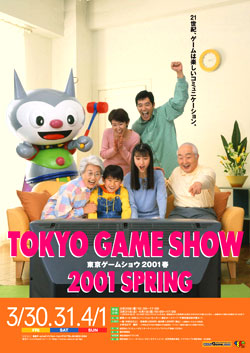
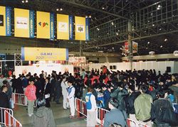

|
|  |
Presented by Tokyo Game Show Secretariat
Last update:April.27. 2001

|
"Tokyo Game Show 2001 Spring" Report
Despite unseasonable snowfall, the venue was filled with a great number of visitors for 3 days.Visitors were able to see future of computer entertainment.
"Tokyo Game Show 2001 Spring" was held
for 3 days from March 30th (Fri.) through April 1st (Sun) at Makuhari Messe (Nippon Convention Center, Chiba City, Chiba Pref.) with organizing of Computer Entertainment Software Association (CESA), support of Ministry of Economy, Trade and Industry, special sponsorship of NTT DoCoMo, Inc., sponsorship of Microsoft Corporation, Nintendo Co.,Ltd., Inc. and Sony Computer Entertainment Inc. Despite unseasonable freak snowfall, the venue was filled with a great number of visitors.
[ The number of visitors to "Tokyo Game Show 2001 Spring"]
|
March 30th (Fri.): 34,329 (2,816)
March 31st (Sat.): 38,639 (7,370)
April 1st (Sun.): 45,112 (9,516)
Total: 118,080 (19,702)
( ) shows the number of visitors to Kid's Corner.
"Tokyo Game Show 2001 Spring" Report
|
 |
Next Tokyo Game Show (2001 Autumn) is scheduled to be held from October 12th(Fri.)
through October 14th (Sun.) Details will be informed on this web page as soon
as it's decided.
|
|
ÅyÅÑÅÑInquiries about Tokyo Game ShowÅz
Please address inquiries about Tokyo Game Show to:
Tokyo Game Show Secretariat
Nishishinbashi-Annex Bidg.,1-22-10 Nishishinbashi, Minato-ku, Tokyo, 105-0003
JAPAN
E-mail: info@cesa.or.jp
|
(c) Computer Entertainment Software Association
Tokyo Game Show Secretariat. All Right Reserved.
No Part of this homepage maybe reproduced
without the expressed consent of the Copyright
owner. |
 |
 |
|